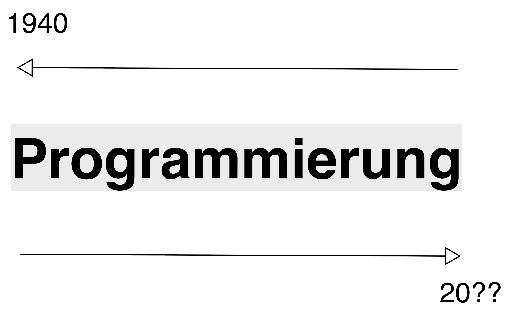
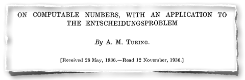
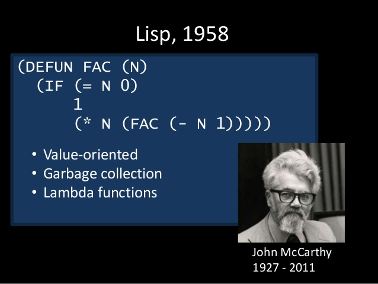
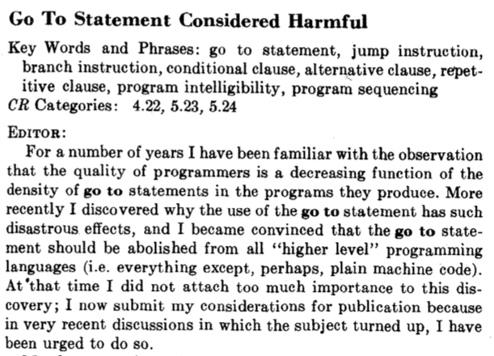
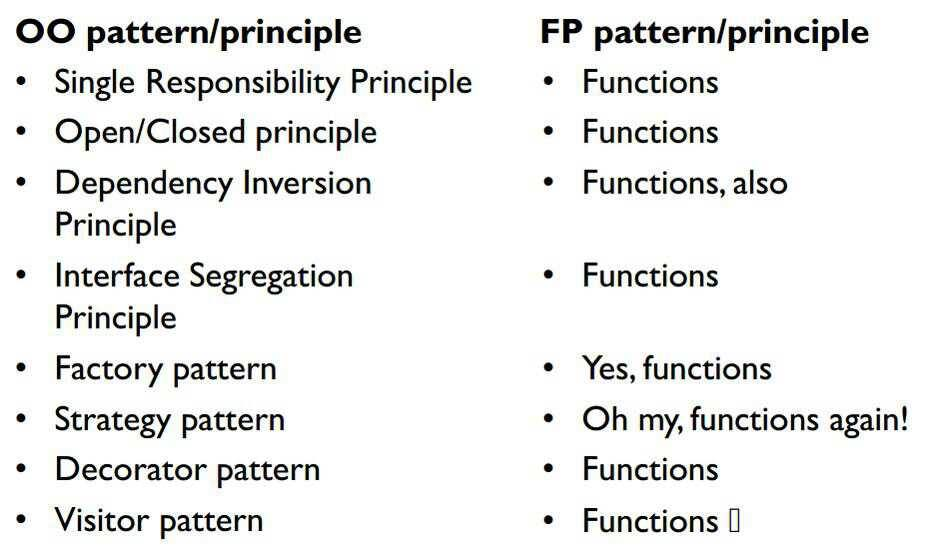
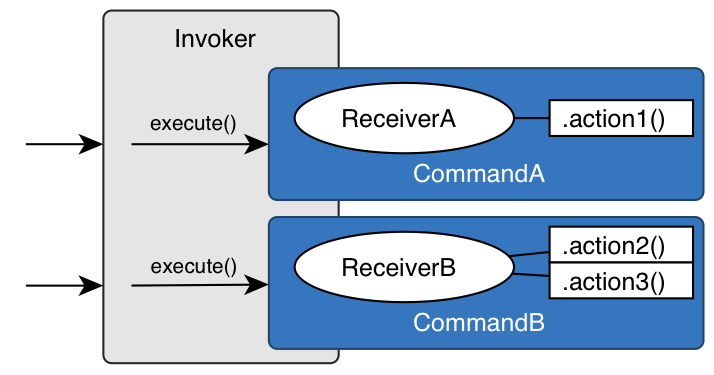
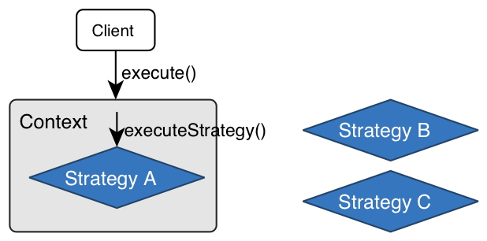
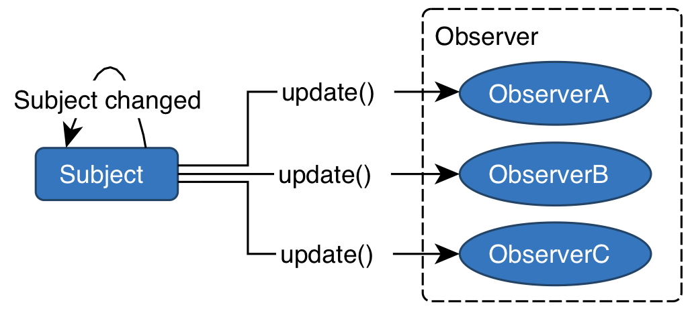

Funktionale versus objektorientierte Programmierung
Programmierparadigmen
Ziele
- Erkennen von Zusammenhängen zwischen verschiedenen Programmierparadigmen, insbesondere zwischen der funktionalen und der objektorientierte Programmierung
- Erkennen der Kernkonzepte der Paradigmen
- Verstehen von Dimensionen der Erweiterbarkeit von Programmen
Funktionale versus objektorientierte Programmierung
Object oriented programs are offered as alternatives to correct ones… — Edsger W. Dijkstra, pioneer of computer science
Ein wenig Historie

1936

- Begriffe: Unterprogramm, Makro, code is data
1945
- Turing schreibt Code.
- in Binärform
- benutzt Integer-Zahlen (add) und boolesche Operationen
- erfindet Unterprogramme einschl. Stack
- erfindet Gleitkommazahlen
- Anzahl der Computer weltweit: \(O(1)\).
- Anzahl der Programmierer weltweit: \(O(1)\).
1953 Fortran


Funktionale Programmierung
1960
- Anzahl der Computer weltweit: \(O(1E2)\).
- Anzahl der Programmierer weltweit: \(O(1E3)\).
1965
- Anzahl der Computer weltweit: \(O(1E4)\).
- Anzahl der Programmierer weltweit: \(O(1E5)\).
1966 Simula 1967
Ole-Johan Dahl, Kristen Nygard:

Objektorientierte Programmierung
1968
Edsger Dijkstra:


Strukturierte Programmierung
Drei Paradigmen
- 1968 – Strukturierte Programmierung. Edsger Dijkstra zeigt, wie der
Gebrauch von
GOTO-Anweisungen durchif/then/elseundwhileersetzt werden kann. - 1966 – Objektorientierte Programmierung. Ole-Johan Dahl und Kristen
Nygaard entwickeln die erste OO-Sprache: Simula-67. Durch die
Einführung der Polymorphie konnten die
function pointerseliminiert werden. - 1957 – Funktionale Programmierung. John McCarthy erfindet Lisp. Lisp basiert auf dem Lambda-Kalkül, entwickelt von Alonzo Church in den 1930ern. Ein wesentliches Merkmal: Es gibt keine Zuweisung.
Drei Paradigmen, drei Einschränkungen
1970
- Anzahl der Computer weltweit: \(O(1E5)\).
- Anzahl der Programmierer weltweit: \(O(1E6)\).
Was bringt die funktionale Programmierung?
- Worin besteht der Kerngedanke der funktionalen Programmierung?
Fehlen der Mutation
- Wie kann das „Fehlen von Etwas” ein wichtiges Feature eines Programmierparadigmas sein?
- Das Fehlen von Zuweisungen ermöglicht das Schreiben von Programmcode ohne befürchten zu müssen, das anderer Code den eigenen negativ beeinflusst.
- Nicht änderbare Datenstrukturen sind das wichtigste „non-feature“, das eine Programmiersprache haben kann.
- Auf einen wichtigen Vorteil soll hier besonders eingegangen werden: Sharing und Aliasing werden irrelevant.
Beispiel: Sortieren eines Vektors
(def sort-pair (fn [pair] (if (< (pair 0) (pair 1)) pair [(pair 1) (pair 0)])))
- Die Funktion liefert im
else-Fall einen neu erzeugten Vektor. - Aber was passiert im
then-Fall?- Erhalten wir eine Kopie des an die Funktion übergebenen Vektors oder
- gibt die Funktion ein Alias auf denselben Vektor zurück?
- Bei Fehlen von Mutation ist die Frage irrelevant.
Beispiel: Funktion append
(def append (fn [xs ys] (cond (empty? xs) ys :else (cons (first xs) (append (rest xs) ys)))))
- Frage: Teilt die zurückgegebene Liste irgendwelche Elemente mit den Argumentlisten?
- Antwort 1: Es spielt keine Rolle, solange kein Aufrufer das feststellen kann.
- Antwort 2: Ja, die neue Liste „wiederverwendet” alle Elemente von
ys. Das spart Speicherplatz und Rechenzeit. - Ein Problem entstünde nur dann, wenn nachträglich die Liste
ysverändert werden könnte. - Unveränderliche Daten erleichtern das Schreiben eleganter Algorithmen erheblich.
- Auch die Funktion
restteilt „dankenswerterweise” ihr Ergebnis mit ihrer Argumentliste (bis auf das erste Element). - In der objektorientierten Programmierung, wo intensiv von Verweissemantik und Mutation Gebrauch gemacht wird, muss die Programmiererin sich mit den Fragen beschäftigen, ob Verweise auf alte Objekte genutzt oder neue Objekte erzeugt werden.
Beispiel: Ein Java-Programm
Ein inzwischen behobenes Sicherheitsproblem in einer Java library:
class ProtectedResource { private Resource theResource = ...; private String[] allowedUsers = ...; public String[] getAllowedUsers() { return allowedUsers; } public String currentUser() { ... } public void useTheResource() { for(int i=0; i < allowedUsers.length; i++) { if(currentUser().equals(allowedUsers[i])) { ... // access allowed: use it return; } } throw new IllegalAccessException(); } }
- Problem:
getAllowedUsersgibt einen Verweis auf das ArrayallowedUserszurück. - Damit ist
getAllowedUsers()[0] = currentUser()möglich. - Abhilfe?
Integration von Daten und Funktionen – Übergang zum Objektbegriff
(bereits in EidP behandelt!)
Funktionen mit Funktionen als Resultat
Beispiele aus dem letzten Semester:
Was liefert der Ausdruck
(inc 3), wenn die Funktionincwie folgt definiert ist?(def inc (fn [n] (fn [z] (+ z n))))
Welches Resultat liefert eine Anwendung der Funktion
dot?(def dot (fn [f g] (fn [x] (f (g x)))))
Was ist ein Objekt?
- Objekte im Sinne der „objektorientierten Programmierung” sind nichts weiter als Funktionen mit „internen” Daten.
So gesehen liefert ein Ausdruck der Art
(def inc-obj (inc 3))
ein Objekt (eine Funktion) mit dem internen Datum (Zustand) 3.
- Die Funktion bezeichnet man in der objektorientierten Programmierung auch als Methode.
- Durch den Ausdruck
(inc-obj 7)wird die Methode aktiviert (die Funktion aufgerufen). Sie verlangt ein Argument. inc-objist ein sehr primitives Objekt mit nur einer (unveränderlichen) Zustandsgrößen und einer Methode.
Ein etwas interessanteres Objekt
(def person (fn [name vorname] (let [get-name (fn [] name) get-vorname (fn []vorname) vollname (fn [] (str vorname " " name)) gruss (fn [g] (str g " " (vollname)))] (fn [nachricht] (cond (= nachricht 'get-name) get-name (= nachricht 'get-vorname) get-vorname (= nachricht 'get-vollname) vollname (= nachricht 'gruss) gruss :else (throw (Exception. "unbekannte Nachricht")))))))
- Ein Aufruf der Funktion
personliefert ein „Objekt” mit- zwei Zustandsgrößen (
name,vorname) und - vier Methoden:
get-name,get-vorname,vollnameundgruss
- zwei Zustandsgrößen (
- „In Wirklichkeit” liefert ein Aufruf der Funktion
personeine Verteilfunktion, die anhand ihres Parametersnachrichtermittelt, welche der Methoden aufzurufen ist.
Anwendungen des person-Objekts
;; Objekterzeugung: (define p1 (person "Gans" "Gustav")) ((p1 'get-vorname)) ;;=> "Gustav" ((p1 'get-name)) ;;=> "Gans" ((p1 'get-vollname)) ;;=> "Gustav Gans" ((p1 'gruss) "hallo") ;;=> "hallo Gustav Gans" (p1 'x) ;; error
Java-Klasse Person
public class Person { String vorname, name; public Person (String n, String v) { vorname = v; name = n; } public String get_name() { return name; } public String get_vorname() { return vorname; } public String vollname() { return vorname + " " + name; } public String gruss(String gruss) { return gruss + " " + this.vollname(); } }
Zusammenfassung
- Für die objektorientierte Programmierung bedarf es keiner speziellen Programmiersprachen.
- Objektorientierung besteht nur aus einer Reihe von Konventionen zum Umgang mit Daten.
- Diese Konventionen werden von objektorientierten Sprachen explizit und implizit unterstützt. Z. B. muss die Verteilfunktion nicht selbst programmiert werden.
Objekte sind nichts weiter als
- eine Menge von
Name->Wert-Abbildungen - eine Reihe von Funktionen, die solche Abbildungen als erstes Argument akzeptieren und
- eine Verteilfunktion, die ermittelt, welche dieser Funtkion aufzurufen ist.
- ergänzt um:
- eine Menge von
Erweiterbarkeit von Programmen
Identifizierung des Problems
Objektorientierte Programmierung …
- … ist gekennzeichnet durch dynamische Bindung und Polymorphie.
Polymorphie-Ansatz der meisten OO-Sprachen:
- Methoden werden innerhalb von Klassen definiert.
- Methodenaktivierung durch „Senden von Nachrichten”: Die zu aktivierende Methode wird anhand der Klassenzugehörigkeit des Empfängerobjekts bestimmt.
class Rechteck { int breite, hoehe; int flaeche() { ... }} class Kreis { int radius; int flaeche() { ... }}
- Jeder „Datentyp” definiert seine Operationen.
- Problem: Datentypen können ohne Zugriff auf den Quellcode nicht erweitert werden.
Funktionale Programmierung …
… ist gekennzeichnet durch Funktionen als Werte erster Ordnung und die Abwesenheit von Seiteneffekten.
- Funktionen enthalten Fallunterscheidungen für Datentypen
(def figur-flaeche (fn [f] (cond (kreis? f) (kreis-flaeche f) (rechteck? f) (rechteck-flaeche f))))
- Problem: Hinzufügen eines neuen Datentyps bedeutet: Alle vorhanden Figur-Funktionen müssen angepasst werden.
Objektorientierte versus funktionale Zerlegung
- Rückgriff auf das Problem der Verarbeitung einer kleinen „Sprache” über arithmetische Ausdrücke (vgl. Aufgabe Mustervergleich).
- In der funktionalen Programmierung werden üblicherweise Programme durch Zerlegung in Funktionen für die auszuführenden Operationen zerlegt.
- In der objektorientierten Programmierung werden Programme in Klassen zerlegt, die Verhalten für bestimmte Arten von Daten bereitstellen.
- Die folgenden Betrachtungen sollen einen Eindruck vermitteln, welche Probleme mit der Erweiterung von Programmen verbunden sein können und inwieweit diese mit dem verwendeten Paradigma in Verbindung stehen.
Problemspezifikation
- Die arithmetischen Ausdrücke bestehen aus ganzzahligen Werten, Negationen und Additionen.
- Für diese Ausdrücke sollen die Operationen
- Auswertung (Bestimmung des Zahlenwerts)
- Umwandlung in eine Zeichenkettendarstellung
- Bestimmung, ob der Ausdruck die Konstante 0 enthält
Die Konstellation kann durch diese Matrix zusammengefasst werden.
eval toString hasZero Constant Add Negation - Gleichgültig welches Paradigma benutzt werden soll, es muss für jedes der neun Felder in der Matrix das geeignete Verhalten bestimmt werden.
Funktionale Lösung in ML
- Die drei Datenarten werden an einer Stelle definiert.
- Die Implementierung der Operationen erfolgt „spaltenweise”.
datatype exp = Constant of int | Negate of exp | Add of exp * exp exception BadResult of string fun eval e = case e of Constant _ => e | Negate e1 => (case eval e1 of Constant i => Constant (~i) | _ => raise BadResult "non-int in negation") | Add(e1,e2) => (case (eval e1, eval e2) of (Constant i, Constant j) => Constant (i+j) | _ => raise BadResult "non-ints in addition") fun toString e = case e of Constant i => Int.toString i | Negate e1 => "-(" ^ (toString e1) ^ ")" | Add(e1,e2) => "(" ^ (toString e1) ^ " + " ^ (toString e2) ^ ")" fun hasZero e = case e of Constant i => i=0 | Negate e1 => hasZero e1 | Add(e1,e2) => (hasZero e1) orelse (hasZero e2)
Eine objektorientierte Lösung …
- … sollte die folgenden Regeln beachten:
- Definition einer Klasse für Ausdrücke mit je einer abstrakten Methode für jede Operation
- Defintion einer Unterklasse für jede Datenvariante
- In jeder der Unterklassen Definition einer Methode für jede Operation; Gemeinsamkeiten könnten in der Oberklasse definiert werden.
- Die Implementierung erfolgt „zeilenweise”.
Teil 1 von Aufgabe (OOP versus FP)
Implementieren die das geschilderte Problem in einer objektorientierten Sprache Ihrer Wahl!
Zwischenbilanz
- Welche Lösung ist die bessere?
- Oft eine Frage der persönlichen Sichtweise, ob es „natürlicher” erscheint, das Problen zeilen- oder spaltenweise zu zerlegen
- Für das Problem der Ausdrücke ist der funktionale Ansatz
möglicherweise übersichtlicher. Die verschiedenen Fälle der
eval-Funktion beieinander zu haben ist leichter überschaubar als die Operationen fürADDoderNegate. - Für die Entwicklung einer graphischen Benutzungsoberfläche ist die objektorientierte Sichtweise vielleicht besser: Hier möchte man eher die Operationen einer bestimmten Datenart, wie z. B. einer Menüleiste, beieinander zu haben, als alle bei einem Mausklick zu berücksichtigenden Fälle.
Erweiterung des Programms um neue Datenvarianten und Operationen
- Die Vor- und Nachteile der betrachteten Paradigmen werden deutlicher, wenn das Programm erweitert werden muss.
- Teil 2 von Aufgabe (OOP versus FP)
- Erweitern Sie beide Varianten des Programms um die neue Operation
noNegConstants, die alle negativen Konstanten in positive verwandelt werden. (Fügen Sie also der Matrix eine neue Spalte hinzu.) - Erweitern Sie beide Varianten des Programms um die neue
Datenvariante
Mult(in Analogie zuAdd).(Fügen Sie also der Matrix eine neue Zeile hinzu.) - Dokumentieren Sie den Implementierungsaufwand für beide Erweiterungen.
- Erweitern Sie beide Varianten des Programms um die neue Operation
Funktionale Entwurfsmuster
Vorbemerkungen
- Welche Entwurfsmuster kennen Sie?
- Wozu dienen Entwurfsmuster?
- Das berühmte Buch: [E.-Gamma:1995pd]
These:
Jedes Entwurfsmuster offenbart einen Mangel der verwendeten Programmiersprache.
So fand Peter Norvig heraus, dass 16 der 23 Entwurfsmuster aus dem oben genannten Buch in Sprachen wie Lisp verschwinden bzw. sich stark vereinfachen lassen ([Norvig1998]).
- Mehrere Entwurfsmuster behandeln bzw. implizieren Zustandsänderungen und sind daher nicht auf die funktionale Programmierung übertragbar.
- Viele (objektorientierte) Entwurfsmuster sind in funktionalen Sprachen Idiome. So wird das Iterator-Muster in Sprachen wie LISP oder ML nicht benötigt.
Ein Bild, das in der Community kursiert (z. B. hier):

- Eine Kategorie der Entwurfsmuster sind die Verhaltensmuster (behavioural patterns). Charakteristisch für die Muster ist die Beobachtung, dass sie Verben (Aktivitäten, Funktionen) in Substantive (Objekte) verwandelt. Funktion werden in Objekte „verpackt“.
- Damit werden häufig natürliche Konzepte der funktionalen Programmierung für die Objektorientierung passend gemacht, häufig auf Kosten von Lesbarkeit und Prägnanz.
Konkrete Muster
Das Befehlsmuster (command pattern)
Zitiert aus Philipp Hauer: Design Pattern:
Das Command Design Pattern ermöglicht die Modularisierung von Befehlen und Aufrufen. Auf elegante Weise können Befehle rückgängig gemacht, protokolliert oder in einer Warteschlange gelegt werden.

Beispiel
- Es werden verschiedene Commands betrachtet, die eine Nachricht verarbeiten.
Basis: ein Interface
interface Command { void run(); }
- Verschiedene Implementierungen des Interface:
für das Logging
public class Logger implements Command { public final String message; public Logger( String message ) { this.message = message; } @Override public void run() { System.out.println("Logging: " + message); } }
Speichern der Nachricht
public class FileSaver implements Command { public final String message; public FileSaver( String message ) { this.message = message; } @Override public void run() { System.out.println("Saving: " + message); } }
Versenden per Email
public class Mailer implements Command { public final String message; public Mailer( String message ) { this.message = message; } @Override public void run() { System.out.println("Sending: " + message); } }
Ein Objekt, das diese Commands ausführen kann:
public class Executor { public void execute(List<Command> tasks) { for (Command task : tasks) { task.run(); } } }
Ausführung einer Liste von Commands durch den
ExecutorList<Command> tasks = new ArrayList<>(); tasks.add(new Logger( "Hi" )); tasks.add(new FileSaver( "Cheers" )); tasks.add(new Mailer( "Bye" )); new Executor().execute( tasks );
- Wie in [E.-Gamma:1995pd] gefordert, werden Funktionen (die auszuführenden Aktionen) in Objekte verpackt (die Commands, die diese Aktionen ausführen).
- Diese Indirektion hat keinen Vorteil, außer Funktionen in strikt objektorientierter Weise behandeln zu können.
Die funktionale Version
- Durch die Einführung von Lambda-Ausdrücken in Java 8 ist es möglich, beide Paradigmen (OO und FP) nahtlos miteinander zu verknüpfen.
- Das
Command-Interface wird nicht benötigt, stattdessen kann das bekannteRunnable-Interface benutzt werden. Die drei
Command-Implementierungen können in Java 8 prägnant durch drei als statische Methoden implementierte Funktionen geschrieben werden:public static void log(String message) { System.out.println("Logging: " + message); } public static void save(String message) { System.out.println("Saving: " + message); } public static void send(String message) { System.out.println("Sending: " + message); }
- Das „Signal-Rausch-Verhältnis” des Codes wird deutlich verbessert, wenn man als Signal den Rumpf der Funktionen und als Rauschen den Code, der zusätzlich benötigt wird, um aus den Funktionen Methoden zu machen, betrachtet.
Auch die
Executor-Klasse kann durch eine statische Methode implementiert werden, die eine Liste vonRunnablesals Argument akzeptiert:public static void execute(List<Runnable> tasks ) { tasks.forEach( Runnable::run ); }
Die Funktionen können nun wieder in eine Liste gepackt und wie zuvor ausgeführt werden:
List<Runnable> tasks = new ArrayList<>(); tasks.add(() -> log("Hi")); tasks.add(() -> save("Cheers")); tasks.add(() -> send("Bye")); execute( tasks );
- Der Java-Compiler übersetzt die Lambda-Ausdrücke ohne Argumente, die
die statischen Methoden (
log,save,send) ausführen, in anonyme Implementierungen desRunnable-Interface, wodurch sie in eine Liste vonRunnablesgepackt werden können.
Das Strategiemuster (strategy pattern)
Zitiert aus Philipp Hauer: Design Pattern:
Das Strategy Design Pattern ermöglicht einer Klasse das flexible Wechseln von alternativen Verhalten.

Beispiel
- Das Ziel des Strategiemusters besteht in der Verallgemeinerung einer Prozedur durch Verwendung verschiedener austauschbarer Algorithmen.
- Hier soll eine Prozedur verallgemeinert werden, die
- einen Text verarbeitet,
- ihn nach gegebenen Kriterien filtert und
- nach einer Formatierung/Transformation ausdruckt.
- Es wird also die Verallgemeinerung von zwei Verhaltensweisen benötigt:
- Filtern des Textes
- Transformation des Textes
Im ersten Schritt werden Verhaltensweisen durch ein Interface abstrahiert:
interface TextFormatter { boolean filter(String text); String format(String text); }
- Danach ist es möglich, eine Klasse zu entwerfen, die eine allgemeine Prozedur für die Publikation eines Textes implementiert.
Ihr wird ein Exemplar eines
TextFormatterInterface (die Strategie) übergeben, das die Details, wie der Text gefiltert und formatiert werden soll, kapselt:public class TextEditor { private final TextFormatter textFormatter; public TextEditor(TextFormatter textFormatter) { this.textFormatter = textFormatter; } public void publishText(String text) { if (textFormatter.filter( text )) { System.out.println( textFormatter.format( text ) ); } } }
- Drei verschiedene Strategie-Implementierungen:
die einfachste Variante: der Text wird unverändert ausgedruckt.
public class PlainTextFormatter implements TextFormatter { @Override public boolean filter( String text ) { return true; } @Override public String format( String text ) { return text; } }
Der Text wird Zeile für Zeile nach Fehlermeldungen durchsucht. Es werden nur die Zeilen, die mit "ERROR" beginnen, in Großbuchstaben ausgedruckt.
public class ErrorTextFormatter implements TextFormatter { @Override public boolean filter( String text ) { return text.startsWith( "ERROR" ); } @Override public String format( String text ) { return text.toUpperCase(); } }
Text wird in Kleinbuchstaben ausgedruckt, sofern er kürzer als zwanzig Zeichen ist.
public class ShortTextFormatter implements TextFormatter { @Override public boolean filter( String text ) { return text.length() < 20; } @Override public String format( String text ) { return text.toLowerCase(); } }
Nun kann ein
TextEditor-Exemplar angelegt und dabei mit einem bestimmtenTextFormatter-Exemplar versehen werden:TextEditor textEditor = new TextEditor( new ErrorTextFormatter() ); textEditor.publishText( "ERROR - something bad happened" ); textEditor.publishText( "DEBUG - I'm here" );
- Es stellt sich erneut die Frage, ob die Lösung nicht wortreicher ist, als sie sein sollte.
- Das einzig relevante Verhalten (das „Signal”) besteht in der Logik
der
publishText-Methode derTextformatter-Klasse. Der Rest ist „Rauschen”.
Die funktionale Version
- Die beiden durch den
Textformatterdefinierten Verhaltensweisen können problemlos in Form von zwei Funktionen an diepublishText-Methode übergeben werden:- ein Prädikat (
Predicate) für die Filterung des Textes eine Transformationsfunktion
UnaryOperator, die ein Objekt in ein anderes desselben Typs verwandeltpublic static void publishText( String text, Predicate<String> filter, UnaryOperator<String> format) { if (filter.test( text )) { System.out.println( format.apply( text ) ); } }
- ein Prädikat (
Benutzung von
publishTextalsPlainTextFormatter:publishText( "DEBUG - I'm here", s -> true, s -> s );
Benutzung von
publishTextalsErrorTextFormatter:publishText( "ERROR - something bad happened", s -> s.startsWith( "ERROR" ), String::toUpperCase );
- Möglicher Einwand: Die Implementierung des
TextFormatterals Klasse ermöglicht einfacher, eine Bibliothek von Strategien zu realisieren, anstatt ihre Implementierung bei jedem Aufruf erneut zu implementieren. Funktionales Gegenmodell:
public class TextUtil { public boolean acceptAll(String text) { return true; } public String noFormatting(String text) { return text; } public boolean acceptErrors(String text) { return text.startsWith( "ERROR" ); } public String formatError(String text) { return text.toUpperCase(); } }
Benutzung der Klasse
TextUtil: Anstelle der anonymen Funktionen werden nun die dort definierten Methoden/Funktionen verwendet; z. B.:publishText( "DEBUG - I'm here", TextUtil::acceptAll, TextUtil::noFormatting ); publishText( "ERROR - something bad happened", TextUtil::acceptErrors, TextUtil::formatError );
- Diese Funktionen besitzen eine feinere Granularität als eine Strategie-Klasse.
- Damit ergibt sich eine bessere Wiederverwendbarkeit.
Das Beobachtermuster (observer pattern)
Zitiert aus Philipp Hauer: Design Pattern:
Das Observer Entwurfsmuster ist für Situationen geeignet, in denen ein oder mehrere Objekte benachrichtigt werden müssen, sobald sich der Zustand eines bestimmten Objekts ändert.

Beispiel
- Das Entwurfsmuster erlaubt einem oder mehreren Objekten, über auftretende Ereignisse informiert zu werden.
Die elementare Abstraktion ist das
Listener-Interface:interface Listener { void onEvent(Object event); }
- Ein Objekt, das auf das Auftreten des Ereignisses (
event) reagieren soll, muss lediglich dieses Interface implementieren und in deronEvent-Methode die erforderliche Reaktion festlegen.
- Das Gegenstück zu einem beobachtenden Objekt ist das beobachtete
(beobachtbare, zu beobachtende):
ein
Observable-Objekt. Ein Objekt, das an alle registrierten Beobachter (listeners) eine Nachricht über ein aufgetretenes Ereignis sendet:
public class Observable { private final Map<Object, Listener> listeners = new ConcurrentHashMap<>(); public void register(Object key, Listener listener) { listeners.put(key, listener); } public void unregister(Object key) { listeners.remove(key); } public void sendEvent(Object event) { for (Listener listener : listeners.values()) { listener.onEvent( event ); } } }
- Zwei (herkömmliche) Varianten, ein
Observer-Objekt zu implementieren:durch eine anonyme, innere Klasse:
public class Observer1 { Observer1(Observable observable) { observable.register( this, new Listener() { @Override public void onEvent( Object event ) { System.out.println(event); } } ); } }
durch die direkte Implementierung des
Listener-Interface:public class Observer2 implements Listener { Observer2(Observable observable) { observable.register( this, this ); } @Override public void onEvent( Object event ) { System.out.println(event); } }
Beide Varianten können in der gleichen Weise benutzt werden:
Observable observable = new Observable(); new Observer1( observable ); new Observer2( observable ); observable.sendEvent( "Hello World!" );
- Auch hier wird das Kernproblem eines großen Teils der GoF-Muster deutlich: Verben, die Aktionen beschreiben, müssen in Substantive verwandelt werden: Klassen, die die Aktionen einwickeln.
Die funktionale Version
Schritt 1: Ersetzen des
Listener-Interface durch das semantisch äquivalenteConsumer-Interface:public static class Observable { private final Map<Object, Consumer<Object>> listeners = new ConcurrentHashMap<>(); public void register(Object key, Consumer<Object> listener) { listeners.put(key, listener); } public void unregister(Object key) { listeners.remove(key); } public void sendEvent(Object event) { listeners.values().forEach( listener -> listener.accept( event ) ); } }
- Schritt 2:
- Die Implementierung der Listener durch eigene Klassen ist nicht mehr notwendig.
Die spezifische Reaktion auf das Eintreten eines Ereignisse kann durch einen Lambda-Ausdruck oder einen Methoden-Verweis kodiert werden:
Observable observable = new Observable(); observable.register( "key1", e -> System.out.println(e) ); observable.register( "key2", System.out::println ); observable.sendEvent( "Hello World!" );
Literaturverzeichnis
- [E.-Gamma:1995pd] Erich Gamma, Richard Helm, Ralph Johnson & John Vlissides, Design Patterns: Elements of Reusable Object-Oriented Software, Addison-Wesley (1995).
- [Norvig1998] Peter Norvig, Design Patterns in Dynamic Languages, (1998), zuletzt aufgerufen am 10.09.2018: http://www.norvig.com/design-patterns/